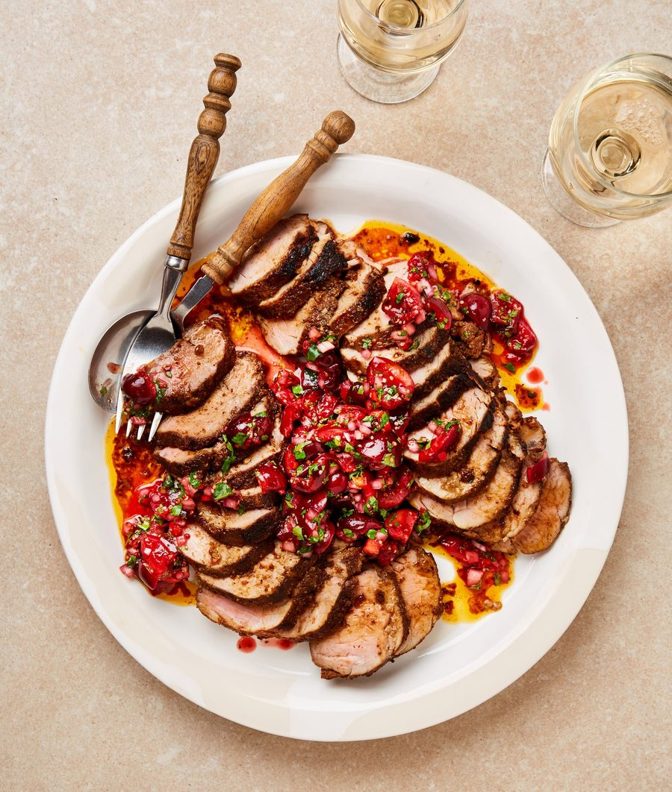

Roast pork tenderloin with cherry and chipotle salsa

Plump, in-season cherries make a glorious salsa that works wonderfully with spiced pork. If you like, make this an even quicker midweek meal by swapping the loin for some chops.
For the spiced pork
For the cherry salsa
First, marinate the pork. In a small bowl, combine all the spices with the sugar and half a teaspoon of salt, rub the mix evenly all over both pieces of pork, then leave to marinate at room temperature for 20 minutes (or in the fridge overnight).
Mix all the salsa ingredients in a small bowl with an eighth of a teaspoon of salt and set aside.
Heat the oven to 200C (180C fan)/390F/gas 6, and put a large, ovenproof frying pan on a high heat. Once it’s hot, pour in the sunflower oil, then sear the pork on all sides for six minutes in total. Add the butter to the pan, then baste the pork with the melted butter until it’s foamy and caramelised. Transfer the pan to the oven for five minutes, turning over the pieces of pork once halfway, then remove, cover with foil and leave to rest for eight to 10 minutes. (If you prefer your meat medium to well done, leave it in the oven for another minute or two).
Cut the pork into ½cm-wide slices, arrange these on a lipped platter, then spoon over the butter from the pan and a third of the cherry salsa. Serve with the rest of the salsa in a bowl on the side.